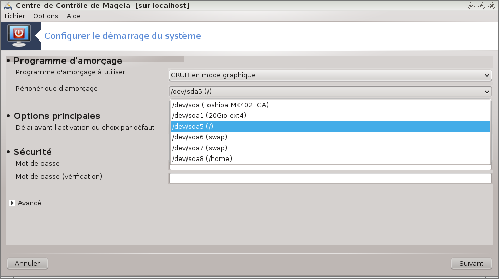

Dual boot Lubuntu-Mageia 2 LXDE
Mer 03 avril 2013
Mageia
Sur le principe, je ne comprends pas bien pourquoi il est plus difficile de faire un double amorçage (dual boot in english) avec deux distributions Linux plutôt qu'avec une distribution Linux et Windows.
Enfin, j'ai réussi à faire un dual boot Lubuntu 12.04 et Mageia 2 (version LXDE aussi, même si cela n'a aucune importance pour la suite du post). Je me suis largement inspiré du fil disponible sur mageia on line.
Je pense que cela fonctionne de la même manière avec toutes les variantes Ubuntu et en 12.10, mais comme je n'ai pas testé ...
Mon objectif était d'installer Mageia à coté de Lubuntu et de proposer au démarrage de l'ordinateur le choix entre ces deux distributions.
Le principe de fonctionnement de l'amorçage
Pour démarrer, un certain nombre de distributions Linux (dont celles basées sur Debian comme Ubuntu, mais également Mageia et d'autres) utilise un même programme d'amorçage : GRUB. Le même, pas tout à fait, car il existe dans des versions différentes en fonction des distributions, qui ne sont pas toujours compatibles.
Dans l'exemple de dual boot Lubuntu Mageia, lorsque vous installez Mageia après Lubuntu, si vous ne faites rien, le GRUB de Mageia ne va pas reconnaître le GRUB de Lubuntu et il sera alors impossible de choisir la distribution au démarrage (l'inverse est également vrai). Heureusement, il est tout à fait possible de "chaîner" les GRUB, c'est à dire d'indiquer au premier GRUB où se trouve le deuxième, et donc de choisir sur quel GRUB, ou quelle distribution démarrer. Cela demande un peu de manipulation et un peu d'expérience. En particulier, il faut savoir :
- utiliser un éditeur en mode root (gedit, nano, vim, ...)
- partitionner un disque (pour la 2ème installation)
La procédure que je décris va permettre d'ajouter une entrée Mageia sur le GRUB de Lubuntu. Pourquoi dans ce sens ? Tout simplement parce que j'ai installé une entrée Plop manager sur le Grub de Lubuntu qui me permet de démarrer sur une clé USB sans passer par le BIOS, je n'ai pas envie de recommencer la configuration de Plop Manager sur le GRUB de Mageia. Il existe une procédure sur Mageia on Line pour chaîner sur le GRUB de Lubuntu à partir du GRUB de Mageia, que je n'ai pas testée car ce n'est pas ce que je voulais faire.
Installer Lubuntu 12.04
Si vous installez Lubuntu sur l'ensemble du disque, le programme d'installation va créer deux partitions sur le disque, la plus grande formatée en ext4 portera un petit nom sdXY, en général, si c'est la seule, sda1, et une toute petite partition swap qui sera sda6 chez moi. Cette partition swap n'a aucun intérêt pour la suite des opérations.
Le programme d'installation va installer le GRUB sur le MBR (master boot record : secteur de démarrage principal du disque dur, sda1 dans ce cas). C'est là le point le plus important à comprendre pour la suite.
Installer Mageia 2
Pour installer Mageia 2 à coté de Lubuntu, le programme d'installation va vous demander de modifier les partitions existantes. Avec le partitionnement automatique, Mageia va créer 3 nouvelles partitions à coté du sda1 et sda6 :
- sda5
- sda7
- sda8
A la fin de l'installation, le paramétrage le plus important à ne pas manquer est celui du chargeur d'amorçage. Vous vous souvenez que le GRUB de Lubuntu est sur sda1. Par défaut, Mageia écrit un nouveau chargeur de démarrage GRUB dans le MBR, en essayant de récupérer les chargeurs d'amorçage existants, mais avec celui de Lubuntu, cela ne fonctionne pas. Et au redémarrage, vous n'aurez plus accès à Lubuntu. Il faut donc configurer le chargeur d'amorçage Mageia pour qu'il pointe sur sda5.
Une illustration en image : choisir sda5 dans le menu déroulant.

Au redémarrage, vous serez toujours sur le GRUB de Lubuntu et vous n'aurez toujours pas accès à Mageia.
Pour vous en convaincre, vous pouvez taper la commande fdisk et voir que la petite étoile dans la colonne amorce est bien devant la partition sda1 où se trouve Lubuntu.
[root@localhost ~]# fdisk -l
Périphérique Amorce Début Fin Blocs Id Système
/dev/sda1 * 2048 43006004 21501978+ 83 Linux
/dev/sda2 43010037 78139391 17564677+ 5 Étendue
/dev/sda5 43010048 60773894 8881923+ 83 Linux
/dev/sda6 77094912 78139391 522240 82 partition d'échange Linux / Solaris
/dev/sda7 60776448 62749889 986721 82 partition d'échange Linux / Solaris
/dev/sda8 62752768 77079869 7163551 83 Linux
Ou encore avec l'outil parted, nous voyons que le numéro 1 (ou sda1) est bien la partition de démarrage
[root@localhost ~]# parted /dev/sda print
Modèle: ATA TOSHIBA MK4021GA (scsi)
Disque /dev/sda : 40,0GB
Taille des secteurs (logiques/physiques): 512B/512B
Table de partitions : msdos
Disk Flags:
Numéro Début Fin Taille Type Système de fichiers Fanions
1 1049kB 22,0GB 22,0GB primary ext4 démarrage
2 22,0GB 40,0GB 18,0GB extended
5 22,0GB 31,1GB 9095MB logical ext4
7 31,1GB 32,1GB 1010MB logical linux-swap(v1)
8 32,1GB 39,5GB 7335MB logical ext4
6 39,5GB 40,0GB 535MB logical linux-swap(v1)
Et c'est là qu'intervient la dernière étape.
Le chaînage
Nous allons dire au GRUB de Lubuntu de chaîner sur le GRUB de Mageia. Pour cela nous allons ajouter une entrée Mageia dans le GRUB de Lubuntu.
Pour cela, il suffit d'ouvrir de fichier 40_custom (le même qui contient mon entrée pour Plop Manager) et d'ajouter les lignes suivantes :
menuentry "Mageia" {
set root=(hd0,5)
chainloader +1
}
Ici, (hd0,5) signifie sda5. (hd1,4) signifierait sdb4 par exemple.
Ensuite nous mettons à jour Grub par la commande suivante :
$ sudo update-grub
Et au redémarrage, nous aurons l'accès à Mageia qui sera proposée.
Ca ne marche pas ton truc
Il y a trois étapes très importantes à respecter pour que le chaînage fonctionne :
- installer d'abord Lubuntu puis Mageia
- ne pas installer le GRUB Mageia sur le MBR mais bien sur la partition sda5
- ne pas se tromper dans les n° hd(x,y)
Si vous avez écrasé le GRUB de Lubuntu avec l'installation de Mageia, je vous conseille de :
- réinstaller le GRUB de Lubuntu (ça évite de refaire toute l'installation)
- réinstaller Mageia proprement
Réinstaller le GRUB de Lubuntu
Il existe des tas de manières de faire, personnellement j'utilise cette procédure qui fonctionne très bien.
L'idée est de démarrer sur un live CD et de réinstaller le programme GRUB sur la racine du disque.
Après avoir démarré sur le live CD, vous ouvrez une fenêtre du terminal et vous montez le disque ainsi que quelques bibliothèques complémentaires.
Ensuite vous installez le programme GRUB et vous le remettez à jour.
Vous sortez proprement.
Et c'est tout, vous pouvez redémarrer.